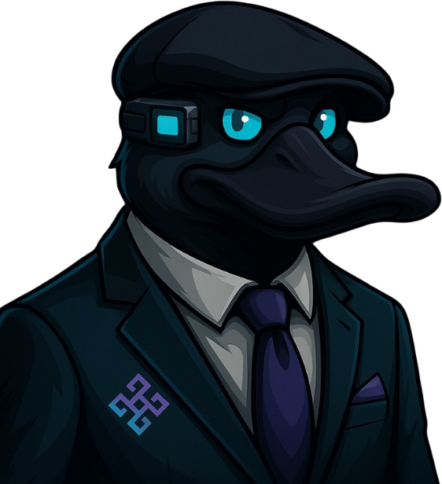

O Inteli Blockchain estuda tecnologia descentralizada em aulas abertas aos membros e transforma o que aprende em projeto. Já foram 25 — de marketplace de energia a rastreio de carbono.
Ver os 25 projetos
O clube tem duas cadências que não se atropelam: a que ensina e a que entrega. Quem entra sabe exatamente o que vem pela frente.
Conduzida pela área Educacional, aberta a todos os membros. Tokenização, DAO, redes blockchain e DeFi — cada tema com material e dicionário próprios, publicados no repositório do clube.
Cada projeto abre com um termo de abertura, roda em ciclo de um mês e tem acompanhamento semanal. O que sai daí vai para o GitHub da organização, não para a gaveta.
Todo membro entra em uma área. As quatro compartilham o mesmo calendário e respondem à diretoria do clube.
Aulas internas, dicionário, trilhas e todo o material de estudo do clube.
Os projetos técnicos, do MVP à entrega, com acompanhamento semanal.
Presença pública, conteúdo e redes sociais do Inteli Blockchain.
Processo seletivo, PDI, acompanhamento e cultura dos membros.
Uma amostra do que os membros construíram. Todos com código aberto na organização do clube no GitHub.